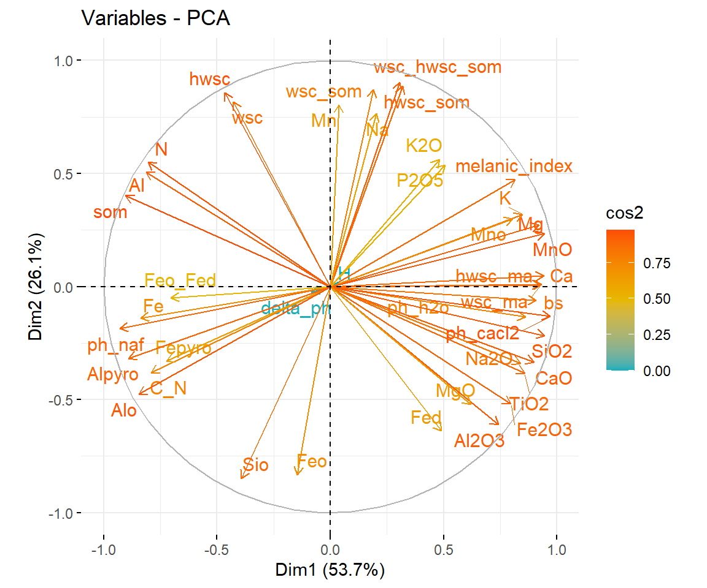
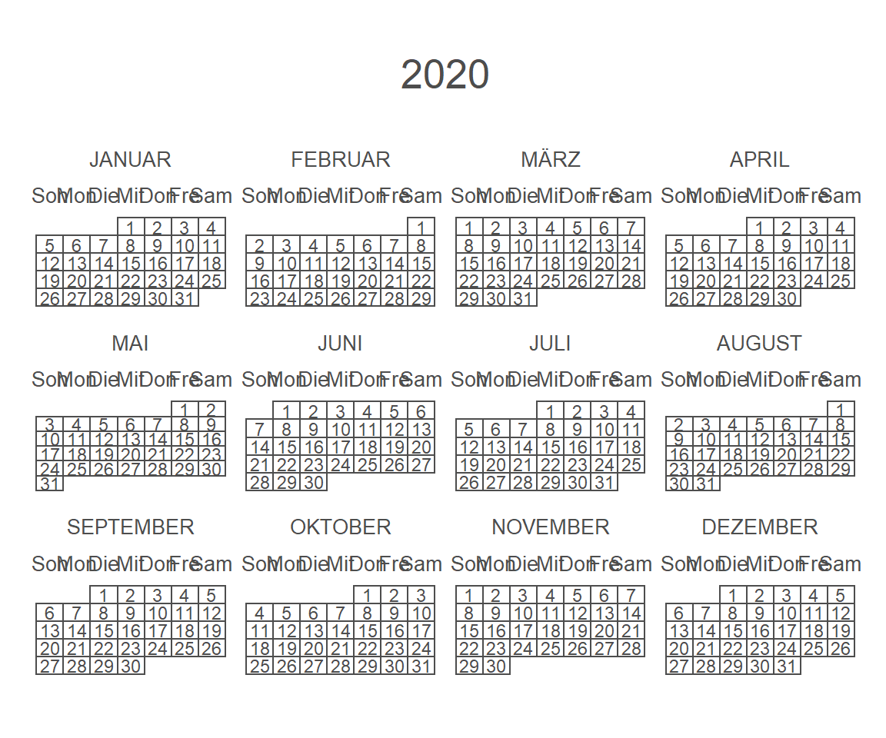

9.4 PCA
üîç sthda.com
Eine Hauptkomponentenanalyse (engl. Principal component analysis; PCA) ist ein Verfahren der multivariaten Statistik. Dadurch können große Datensätze strukturiert und vereinfacht werden, durch eine möglichst geringe Zahl aussagekräftiger Linearkombinationen (Hauptkomponenten). PCA wird verwendet um Informationen von einer Vielzahl (inter-korrelierten) quantitativen Variablen zu extrahieren. Diese Informationen werden reduziert zu den genannten wenigen Hauptkomponenten (= principal components = PC).
Das Ziel einer PCA ist es die Hauptachsen (PC) so zu arrangieren, dass die Variation der Daten maximiert wird. Einfach ausgedrückt kann man eine PCA als Rotation des Koordinatensystems verstehen:

Figure 9.8: Illustration von C.Wilke: https://wilkelab.org/SDS375/
üí° Eine PCA ist besonders dann n√ºtzlich, wenn die Variablen in einem Datensatz stark korreliert sind. Korrelation bedeutet Redundanz und wegen dieser Redundanz kann eine PCA viele Variablen in eine geringere Anzahl an neuen Variablen (= PC) umwandeln, welche m√∂glichst viel Varianz der urspr√ºnglichen Daten erkl√§ren.
In R gibt es mehrere Möglichkeiten eine PCA durchzuführen
- prcomp() and princomp() [built-in R stats package]
- PCA() [FactoMineR package]
- dudi.pca() [ade4 package]
- epPCA() [ExPosition package]
Egal welches package man verwendet, die Daten der PCA können auch mit dem factoextra package verarbeitet werden. Dies hat den Vorteil, dass die Visualisierung ggplot2-basiert ist.
# Laden des Datensatzes
df_ec <- readr::read_delim("data/data_ecuador.csv", delim = ";", col_types =
cols(
wsc = col_double(),
wsc_ma = col_double(),
wsc_som = col_double(),
hwsc = col_double(),
hwsc_ma = col_double(),
hwsc_som = col_double(),
wsc_hwsc_som = col_double(),
Fed = col_double(),
Feo = col_double(),
Feo_Fed = col_double(),
Fepyro = col_double(),
Mno = col_double(),
Alo = col_double(),
Sio = col_double(),
Alpyro = col_double()
)
)
# Laden der packages
library(factoextra)
library(FactoMineR)9.4.1 Datenauswahl
Zuerst wählen wir die Daten aus, welche wir in der PCA berücksichtigen wollen.
# Create one data frame with the data
df_pca <- df_ec %>%
select(site_name, depth, som:P2O5, -mat_amorph, -index) %>%
na.omit() # Mit dem Befehl werden NA Werte aus den Daten entfernt...wichtig (!) bevor die PCA durchgeführt werden kann
# Create one data frame
df_var <- df_pca %>%
select(site_name, depth)
head(df_pca, n = 5)
## # A tibble: 5 x 44
## site_name depth som wsc wsc_ma wsc_som hwsc hwsc_ma hwsc_som wsc_hwsc_som
## <chr> <chr> <dbl> <dbl> <dbl> <dbl> <dbl> <dbl> <dbl> <dbl>
## 1 PA1 0-30 167 1.24 37 0.007 5.11 44 0.031 0.038
## 2 PA1 30-60 118. 0.538 32 0.005 2.30 37 0.02 0.024
## 3 PA1 60-90 114. 0.301 31 0.003 1.46 37 0.013 0.015
## 4 PA1 0-30 162. 1.15 39 0.007 5.04 44 0.031 0.038
## 5 PA1 30-60 115. 0.46 38 0.004 1.91 37 0.017 0.021
## # ... with 34 more variables: N <dbl>, C_N <dbl>, ph_h2o <dbl>, ph_cacl2 <dbl>,
## # delta_ph <dbl>, ph_naf <dbl>, melanic_index <dbl>, bs <dbl>, Ca <dbl>,
## # Mg <dbl>, K <dbl>, Na <dbl>, Al <dbl>, Fe <dbl>, Mn <dbl>, H <dbl>,
## # Fed <dbl>, Feo <dbl>, Feo_Fed <dbl>, Fepyro <dbl>, Mno <dbl>, Alo <dbl>,
## # Sio <dbl>, Alpyro <dbl>, SiO2 <dbl>, TiO2 <dbl>, Al2O3 <dbl>, Fe2O3 <dbl>,
## # MnO <dbl>, MgO <dbl>, CaO <dbl>, Na2O <dbl>, K2O <dbl>, P2O5 <dbl>9.4.2 Daten Standardisieren
Bei einer PCA werden die Daten häufig standardisiert, also skaliert. Dies ist besonders wichtig wenn die Einheiten stark unterschiedlich sind, bspw. in %, mg kg-1, etc.
üí° Wenn man die Funktion PCA() im FactoMineR verwendet, gibt es das Argument die Daten zu standardisieren. Dies muss also nicht im Vorfeld durchgef√ºhrt werden.
pca <- PCA(df_pca[,-c(1:2)], scale.unit = T, ncp = 5, graph = F) # Makes the PCA but without the site_name and depth grouping value
pca
## **Results for the Principal Component Analysis (PCA)**
## The analysis was performed on 44 individuals, described by 42 variables
## *The results are available in the following objects:
##
## name description
## 1 "$eig" "eigenvalues"
## 2 "$var" "results for the variables"
## 3 "$var$coord" "coord. for the variables"
## 4 "$var$cor" "correlations variables - dimensions"
## 5 "$var$cos2" "cos2 for the variables"
## 6 "$var$contrib" "contributions of the variables"
## 7 "$ind" "results for the individuals"
## 8 "$ind$coord" "coord. for the individuals"
## 9 "$ind$cos2" "cos2 for the individuals"
## 10 "$ind$contrib" "contributions of the individuals"
## 11 "$call" "summary statistics"
## 12 "$call$centre" "mean of the variables"
## 13 "$call$ecart.type" "standard error of the variables"
## 14 "$call$row.w" "weights for the individuals"
## 15 "$call$col.w" "weights for the variables"Das Ergebnis der Funktion PCA() ist eine Liste mit verschiedenen Komponenten.
Wichtige FUnktionen in dem factoextra package lauten:
- get_eigenvalue(res.pca): Extrahiert Eigenvalues/Varianz der PC
- fviz_eig(res.pca): Visualisiert die Eigenvalues
- get_pca_ind(res.pca), get_pca_var(res.pca): Extrahiert das Ergenis spezieller Variablen
- fviz_pca_ind(res.pca), fviz_pca_var(res.pca): Visualisiert das Ergenis spezieller Variablen
- fviz_pca_biplot(res.pca): Biplot individueller Variablen
9.4.3 Eigenvalues
Eigenvalues messen die Stärke der Variation jeder PC.
eig.val <- get_eigenvalue(pca)
eig.val %>%
head(n = 5)
## eigenvalue variance.percent cumulative.variance.percent
## Dim.1 22.0353186 53.744680 53.74468
## Dim.2 10.7046683 26.108947 79.85363
## Dim.3 2.0512772 5.003115 84.85674
## Dim.4 1.5700885 3.829484 88.68623
## Dim.5 0.9291947 2.266328 90.95255Für den Ecuador Datensatz erklären die Eigenvalues der ersten zwei PCs 83% der Varianz (das ist viel). Wieviele PCs für die Auswahl der PCA wichtig sind lässt sich nicht objektiv sagen. Eine Möglichkeit ist es einen Wert festzulegen, mit dem man selber zufrieden ist:
You can also limit the number of component to that number that accounts for a certain fraction of the total variance. For example, if you are satisfied with 70% of the total variance explained then use the number of components to achieve that. (Kaiser 1961)
Eine graphische Darstellung der Eigenvalue ist auch eine Möglichkeit:
fviz_eig(pca, addlabels = T, ylim = c(0,60))
In der Darstellung sind die EIgenvalues absteigend sortiert und man wählt den Punkt aus, wo die vebleibenden Eigenvalues gleichbleibend klein bleiben (in unserem Fall ab der dritten PC).
9.4.4 Darstellen der Ergebnisse
Die einfachste Methode ist mit der Funktion get_pca_var().
var <- get_pca_var(pca)
var
## Principal Component Analysis Results for variables
## ===================================================
## Name Description
## 1 "$coord" "Coordinates for the variables"
## 2 "$cor" "Correlations between variables and dimensions"
## 3 "$cos2" "Cos2 for the variables"
## 4 "$contrib" "contributions of the variables"Die vier verschiedenen Komponenten von get_pca_var() können genutzt werden um die Ergebnisse auf verschiedenen Art darzustellen:
# Coordinates
head(var$coord)
## Dim.1 Dim.2 Dim.3 Dim.4 Dim.5
## som -0.9035830 0.401687675 0.02396744 0.04367303 0.007574548
## wsc -0.4272716 0.818221888 0.23566053 0.01842607 0.228960043
## wsc_ma 0.9311431 0.009632107 0.06882345 0.31524171 -0.038210767
## wsc_som 0.1897357 0.870939967 0.25573775 -0.10827495 0.234158268
## hwsc -0.4664379 0.858078439 0.11239753 0.02954132 0.055621320
## hwsc_ma 0.9266593 0.008194929 0.09076181 0.30533813 -0.039134670
# Cos2: Quality on the factore map
head(var$cos2)
## Dim.1 Dim.2 Dim.3 Dim.4 Dim.5
## som 0.81646222 1.613530e-01 0.0005744384 0.0019073332 5.737378e-05
## wsc 0.18256102 6.694871e-01 0.0555358864 0.0003395199 5.242270e-02
## wsc_ma 0.86702742 9.277748e-05 0.0047366671 0.0993773365 1.460063e-03
## wsc_som 0.03599964 7.585364e-01 0.0654017962 0.0117234644 5.483009e-02
## hwsc 0.21756428 7.362986e-01 0.0126332053 0.0008726898 3.093731e-03
## hwsc_ma 0.85869745 6.715687e-05 0.0082377069 0.0932313730 1.531522e-03
# Contribution to the PCA
head(var$contrib)
## Dim.1 Dim.2 Dim.3 Dim.4 Dim.5
## som 3.7052436 1.5073142260 0.02800394 0.12147935 0.00617457
## wsc 0.8284928 6.2541597721 2.70738089 0.02162425 5.64173514
## wsc_ma 3.9347170 0.0008667011 0.23091307 6.32940986 0.15713206
## wsc_som 0.1633725 7.0860339197 3.18834513 0.74667539 5.90081897
## hwsc 0.9873435 6.8782944667 0.61587022 0.05558220 0.33294759
## hwsc_ma 3.8969142 0.0006273606 0.40158917 5.93796928 0.164822569.4.4.1 Darstellung im Koordinatensystem
Um die Variablen im Koordinatensystem darzustellen eignet sich der folgende Befehl:
fviz_pca_var(pca, repel = T)Dieser Plot wird auch als Variable correlation plot bezeichnet und zeigt die Beziehung zwischen den Variablen:
- Positiv korrelierte Variablen clustern zusammen * Negativ korrelierte Variablen sind gegenüber positioniert (gegenüberliegende Quadranten)
- Der Abstand der Variable zum Zentrum des Kreises stellt die Qualität der Variable auf der factor map da. Weit entfernte Variablen werden auf der factor map besser dargestellt.
Die Qualität der Darstellung wird über cos2 definiert (quadrierter Cosinus, quadrierte Koordinaten). Darstellen kann man den Zusammenhang als barplot:
fviz_cos2(pca, choice = "var")
Ein großer cos2 Wert bedeutet eine gute Repräsentation der Variable auf der PC. In diesem Fall ist die Variable nah am Kreisumfang positioniert. Ein niedriger co2 Wert bedeutet, dass die Variable nicht perfekt dargestellt wird, wobei die Variable näher am Zentrum des Kreises liegt. Die Summe des cos2 einer Variable auf allen PCs ist = 1. Wenn eine Variable also perfekt durch nur zwei PCs dargestellt wird, dann ist der cos2 Werte ~1 und die Variable liegt nah am Kreisumfang. Wozu ist der cos2 also wichtig?
- Beschreibt die QUalität der Darstellung
- Je näher die Variable am Kreisumfang desto besser wird diese Variable auf der factor map dargestellt.
- Variablen nahe des Kreiszentrums tragen wenig zur ersten PC bei
Die QUalität der Variable kann auch farblich dargestellt werden:
fviz_pca_var(pca, col.var = "cos2", gradient.cols = c("#00AFBB", "#E7B800", "#FC4E07"),
repel = TRUE # Avoid text overlapping
)
9.4.4.2 Beitrag einer Variable zur PCA
Der Beitrag einer Variable für die Variabilität einer PC wird in % angegeben.
- Variablen die mit PC1 (Dim.1) und PC2 (Dim.2) korreliert sind haben die größte Bedeutung um die Variabilität im Datensatz zu erklären.
- Variablen die mit keiner PC korrelieren haben den geringsten Beitrag
üí° Um die Aussage einer PCA zu verst√§rken k√∂nnen Variablen mit einem geringen Beitrag von der Analyse ausgeschlossen werden.
# Show the variables contributing to PC1
fviz_contrib(pca, choice = "var", axes = 1)
# Show the variables contributing to PC2
fviz_contrib(pca, choice = "var", axes = 2)
# Show the variables contributing to PC1 AND PC2
fviz_contrib(pca, choice = "var", axes = 1:2)
SOM, pH und hwsc tragen am meisten zu PC1 und PC2 bei, die mineralogischen Kennwerte des Eisens spielen eine untergeordnete Rolle.
fviz_pca_var(pca, col.var = "contrib", repel = T, gradient.cols = c("#00AFBB", "#E7B800", "#FC4E07"))
Je näher der Pfeil am Kreisumfang positioniert ist, desto größer ist der Beitrag einer Variable für die Separierung der Daten.
9.4.4.3 Darstellen der Individuen in der PCA
Die Informationen der Individuen können mit der Funktion get_pca_ind() abgerufen werden.
ind <- get_pca_ind(pca)
# Coordinates of individuals
head(ind$coord)
## Dim.1 Dim.2 Dim.3 Dim.4 Dim.5
## 1 -3.555229 6.1901987 0.36582084 0.2385691 0.4755535
## 2 -1.853013 -0.1218242 1.25100363 -1.8782000 -0.3163522
## 3 -1.640374 -1.1297505 0.72048321 -0.9106315 -0.1500884
## 4 -2.135484 6.8982505 0.08300526 0.1573187 0.4908759
## 5 -1.465293 0.1039718 0.85549779 -1.3135040 -0.4857763
## 6 -1.196337 -2.4444755 0.78528722 -0.6925059 0.6547019
# Quality of individuals
head(ind$cos2)
## Dim.1 Dim.2 Dim.3 Dim.4 Dim.5
## 1 0.23462355 0.711288225 0.0024841244 0.0010564888 0.004197930
## 2 0.28017327 0.001210980 0.1276987925 0.2878414594 0.008166037
## 3 0.23813244 0.112952985 0.0459388781 0.0733868052 0.001993549
## 4 0.07515351 0.784213920 0.0001135449 0.0004078658 0.003971002
## 5 0.30414848 0.001531328 0.1036751558 0.2443991716 0.033427938
## 6 0.09606433 0.401075715 0.0413915834 0.0321885866 0.028770156
# Contributions of individuals
head(ind$contrib)
## Dim.1 Dim.2 Dim.3 Dim.4 Dim.5
## 1 1.3036565 8.135482080 0.148272248 0.08238567 0.55314543
## 2 0.3541482 0.003150948 1.733964139 5.10630656 0.24478359
## 3 0.2775325 0.270981201 0.575136197 1.20035171 0.05509788
## 4 0.4703494 10.103039065 0.007633684 0.03582480 0.58936466
## 5 0.2214505 0.002295120 0.810887778 2.49738790 0.57718269
## 6 0.1476166 1.268660714 0.683250614 0.69417683 1.04840204Plots: Quality and contribution
fviz_pca_ind(pca, repel = T)
Individuen können auch nach dem cos2 Wert gruppiert werden
# Group by color
fviz_pca_ind(pca, col.ind = "cos2",
gradient.cols = c("#00AFBB", "#E7B800", "#FC4E07"),
repel = TRUE # Avoid text overlapping (slow if many points)
)
üí° Individuen mit √§hnlichen Eigenschaften werden zusammen gruppiert.
Um den Anteil (contribution) der ersten zwei PC (DIM.1 und DIM.2) darzustellen schreibe:
fviz_contrib(pca, choice = "ind", axes = 1:2)Die Proben 39,42,36,37 tragen am meisten für die Separierung der Daten bei, die Proben 2,3,5 am wenigsten.
9.4.4.4 Farbliche Darstellung
Wie für Variablen können auch Individuen farblich dargestellt werden, bspw. nach Kategorien gruppiert werden (Standort, Tiefe). Argument habillage oder col.ind kann genutzt werden um Individuen nach Gruppen darzustellen. Um eine Ellipse zu erzeugen kann addEllipses = T gesetzt werden:
# Create one data frame with the data
df_pca <- df_ec %>%
select(site_name, depth, som:P2O5, -mat_amorph, -index) %>%
na.omit() # Mit dem Befehl werden NA Werte aus den Daten entfernt...wichtig (!) bevor die PCA durchgeführt werden kann
# Create one data frame only for the grouping variable
df_var <- df_pca %>%
select(site_name, depth)
pca <- PCA(df_pca[,-c(1:2)], scale.unit = T, ncp = 5, graph = F) # Makes the PCA but without the site_name and depth grouping value
# Gruppieren nach Standort
fviz_pca_ind(pca,
col.ind = df_var$site_name, # color by site_name
addEllipses = TRUE, # Concentration ellipses
label= "var",
legend.title = "Plot",
repel = TRUE # to not have overlapping text in the figure
)
# Gruppieren nach Tiefe
fviz_pca_ind(pca,
geom.var = "arrow",
col.ind = df_var$depth, # color by depth
addEllipses = TRUE, # Concentration ellipses
label= "var",
legend.title = "Plot",
repel = TRUE # to not have overlapping text in the figure
)
In diese Darstellung fließen ALLE numerischen Variablen des Datensatzes ein. Die Paramo-Standorte clustern sehr schön zusammen und es gibt eine Separierung von AC1 und AC2. Besonders AC2 unterscheidet sich signifikant. Ein sehr schönes Ergebnis, dass den Einfluss von 100 Jahren landwirtschaftliche Nutzung hervorhebt.
9.4.4.5 Figure
# Gruppieren nach Standort
p1 <- fviz_pca_ind(pca,
col.ind = df_var$site_name, # color by site_name
addEllipses = TRUE, # Concentration ellipses
label= "var",
legend.title = "Plot",
repel = TRUE # to not have overlapping text in the figure
)
# Gruppieren nach Tiefe
p2 <- fviz_pca_ind(pca,
geom.var = "arrow",
col.ind = df_var$depth, # color by depth
addEllipses = TRUE, # Concentration ellipses
label= "var",
legend.title = "Depth",
repel = TRUE # to not have overlapping text in the figure
)
p1 + p2 + plot_annotation(tag_levels = "A")
ggsave("images/results/PCA_1.png", width = 12, height = 5)
fviz_pca_biplot(pca, repel = TRUE,#to not have overlapping text
#variables
col.var = "contrib",# colour variables according to their contribution to the variance between the axes
gradient.cols = c("#00AFBB", "#E7B800", "#FC4E07"),
#individuals
geom.ind = "point",#using point shape for our indidividual data points
fill.ind = df_var$site_name, col.ind = "black", #group and colour according to plot and black border of points
pointshape = 21, pointsize = 2,#pointshape 21 is the circel with 2 differing colours important for visibility, pointsize can be adjusted if you want
palette = c("red", "orange", "#c7e9c0","#41ab5d","#006d2c"),# maybe adjust the colour setting here, I tried to take similar colours to before
addEllipses = TRUE,# addinf ellipses to our group of individual data points
#supplements
legend.title = list(fill="Plot",color = "Contribution"))#customizing our legend
ggsave("images/results/PCA_2.png", width = 9, height = 9)